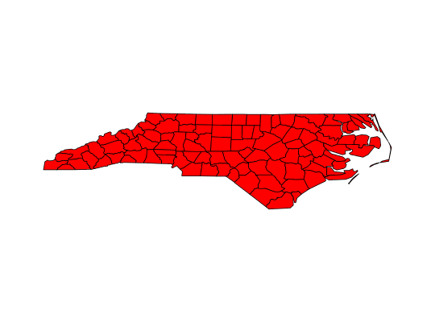

Create viewport from sf, sfc or sfg object
st_viewport(x, ..., bbox = st_bbox(x), asp)
the output of the call to viewport
parameters width, height, xscale and yscale are set such that aspect ratio is honoured and plot size is maximized in the current viewport; others can be passed as ...
if asp is missing, it is taken as 1, except when isTRUE(st_is_longlat(x)), in which case it is set to 1.0 /cos(y), with y the middle of the latitude bounding box.
#> Reading layer `nc' from data source `/home/edzer/git/sfr/inst/shape/nc.shp' using driver `ESRI Shapefile' #> features: 100 #> fields: 14 #> converted into: MULTIPOLYGON #> proj4string: +proj=longlat +datum=NAD27 +no_defs #>grid.newpage() pushViewport(viewport(width = 0.8, height = 0.8))pushViewport(st_viewport(nc))